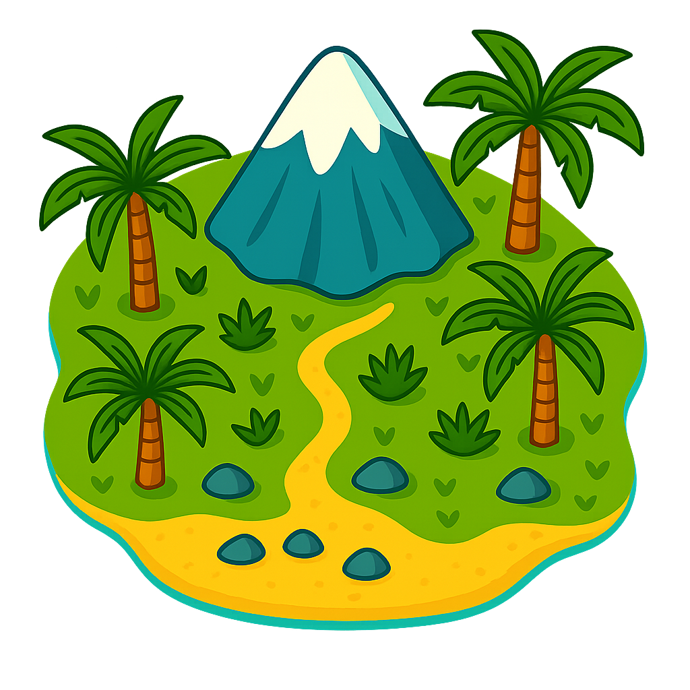
Planeiland
Leerlingen leren stap voor stap hoe ze een schoolweek realistisch plannen en overzicht houden in hun werk.
Studievaardigheden, digitale geletterdheid en welzijn in één interactief programma waar leerlingen wél op aanhaken.
Vraag een demo aan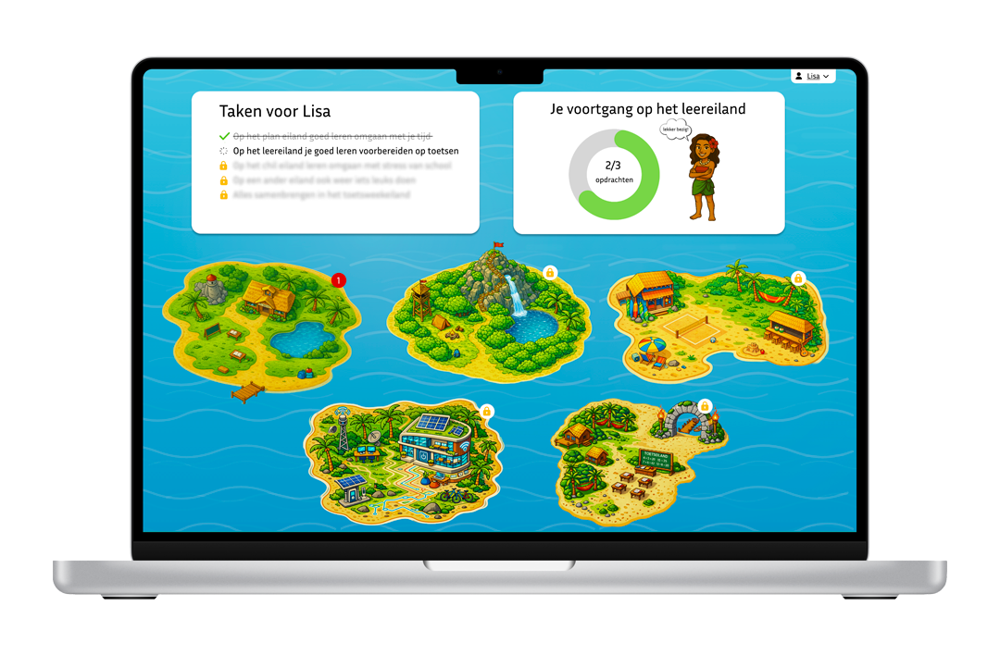
Brugklasdocenten weten hoe belangrijk de eerste maanden zijn. Juist dan moeten leerlingen wennen aan een nieuw tempo, meer zelfstandigheid, huiswerk, toetsen, sociale druk en digitale prikkels. Ondertussen moet je als school ook nog zorgen voor structuur, begeleiding en kansengelijkheid.
In onze digitale leeromgeving werken leerlingen stap voor stap aan vaardigheden die direct verschil maken in hun schooldag. Niet als droge extra taak, maar als interactieve en aantrekkelijke route waar inhoud, humor en toepasbaarheid samenkomen.
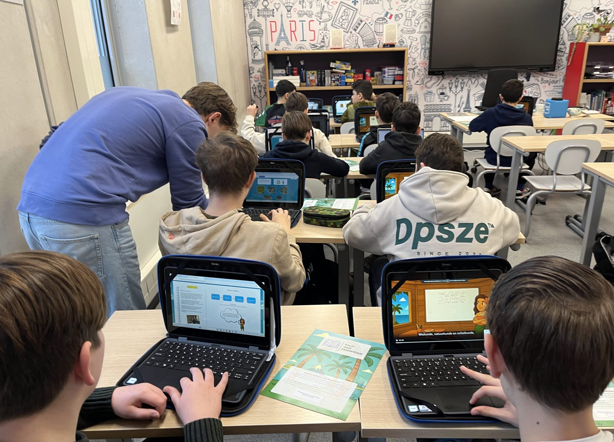
Elk eiland richt zich op een vaardigheid die in de brugklas direct relevant is. Samen vormen ze één compleet programma dat leerlingen helpt groeien in structuur, zelfvertrouwen en zelfstandigheid.

Leerlingen leren stap voor stap hoe ze een schoolweek realistisch plannen en overzicht houden in hun werk.
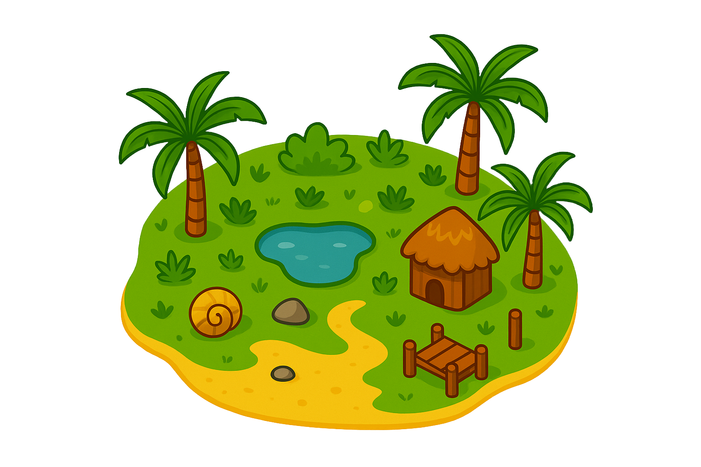
Leerlingen ontdekken welke leerstrategieën werken voor verschillende vakken, zodat leren effectiever en slimmer wordt.
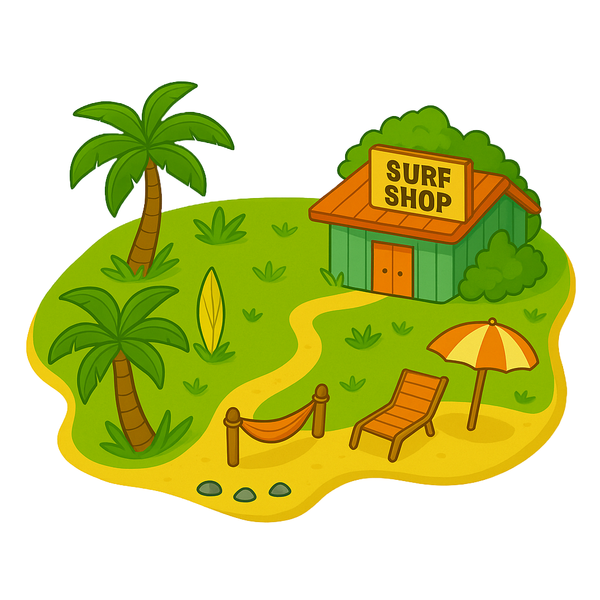
Hier werken leerlingen aan zelfvertrouwen, sociale vaardigheden en omgaan met spanning en toetsstress.
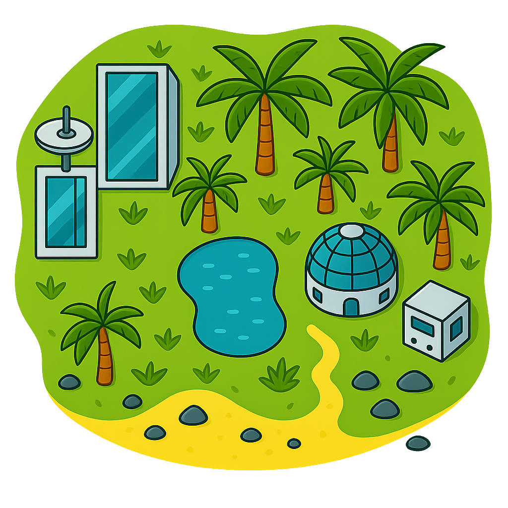
Digitale geletterdheid staat hier centraal. Leerlingen leren bewust omgaan met online tools, AI en digitale veiligheid.
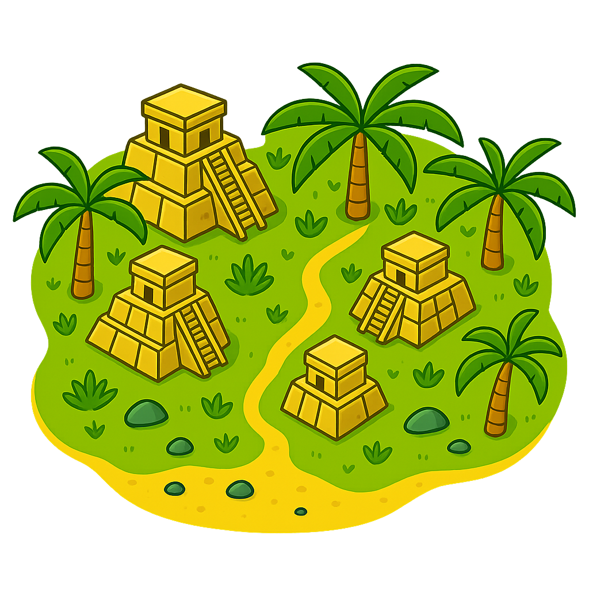
Op dit eiland ontwikkelen leerlingen grip op voorbereiding, toetsaanpak en omgaan met druk.
Niet alleen een leuke digitale leeromgeving, maar ook een praktische oplossing voor wat brugklassers echt nodig hebben.
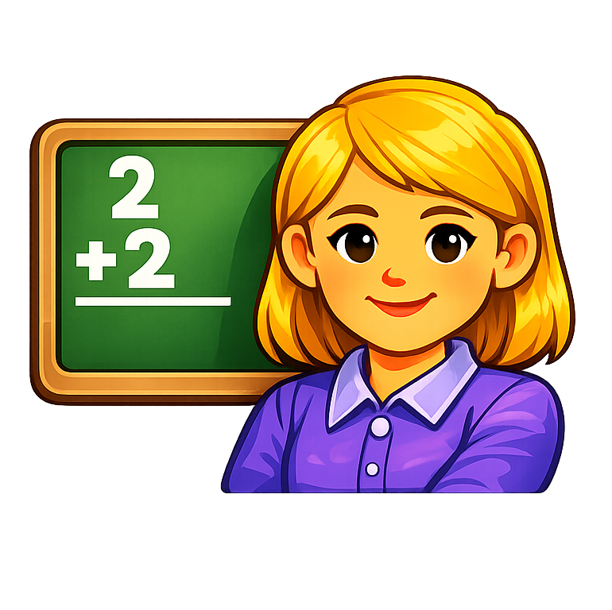
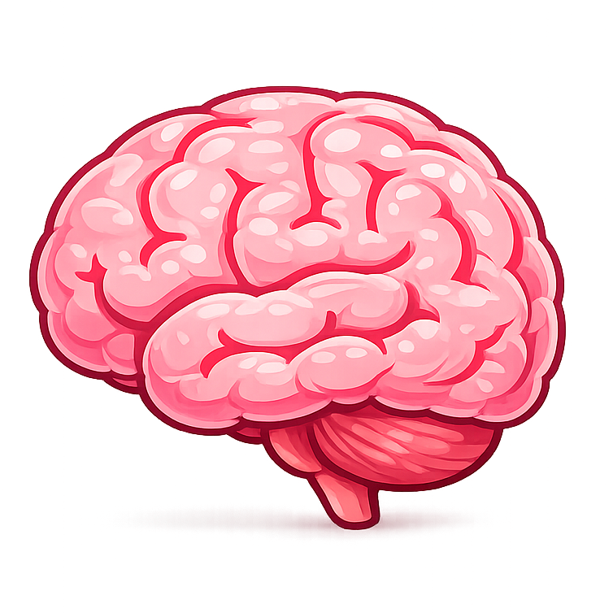
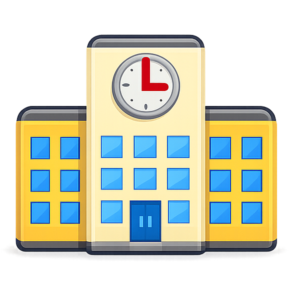
Geen stoffige methode, maar een digitale omgeving die leerlingen aanspreekt en docenten overzicht geeft, zonder extra werk. Waar andere methodes jaren vaststaan, bewegen wij continu mee met de ontwikkelingen binnen het onderwijs en de belevingswereld van leerlingen.
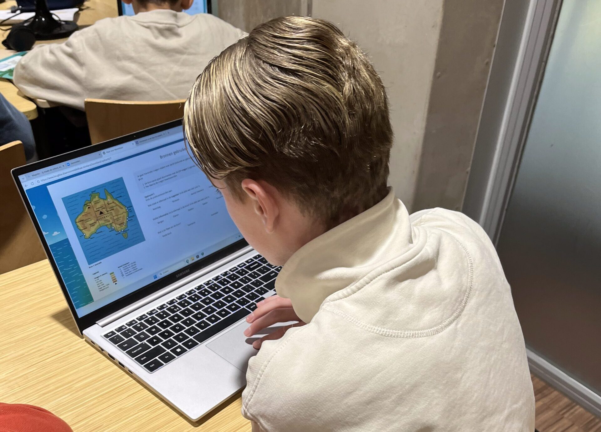
De inhoud moet kloppen, maar leerlingen moeten ook zin hebben om met Klaar voor Middelbaar aan de slag te gaan. Juist die combinatie komt in de reacties op ons programma terug.
"Als middelbare schooldocent en mentor vind ik de lessenserie van Klaar voor Middelbaar een uitstekende voorbereiding bieden voor de overstap naar de middelbare school. De leerlingen waren erg enthousiast, erg goed dat hier aandacht voor is!"
"Door Klaar voor Middelbaar weet ik nu veel beter hoe ik moet leren."
"Ik vond het leuk dat we een spel mochten spelen als we een eiland hebben afgerond."
Kies de variant die past bij jullie school. Beide opties geven een heel schooljaar toegang tot het programma.
Een heel schooljaar toegang tot onze software voor brugklassers.
Een heel schooljaar toegang tot de software, aangevuld met het magazine vol tips, tricks en extra verdieping.
Klaar voor Middelbaar kan in sommige gevallen ook via bestaande subsidieregelingen worden gefinancierd.
Met ons programma verzachten we de landing van primair naar voortgezet onderwijs.
Meer informatieKlaar voor Middelbaar draagt bij aan een sterkere en eerlijkere start in het voortgezet onderwijs.
Meer informatieOns programma helpt leerlingen betere leerstrategieën ontwikkelen en hun digitale geletterdheid versterken.
Meer informatieBiedt ruimte om te investeren in programma's zoals Klaar voor Middelbaar die bijdragen aan duurzame schoolontwikkeling.
Meer informatie
Wil je een demo of offerte aanvragen, of heb je gewoon een vraag? Laat het ons weten!